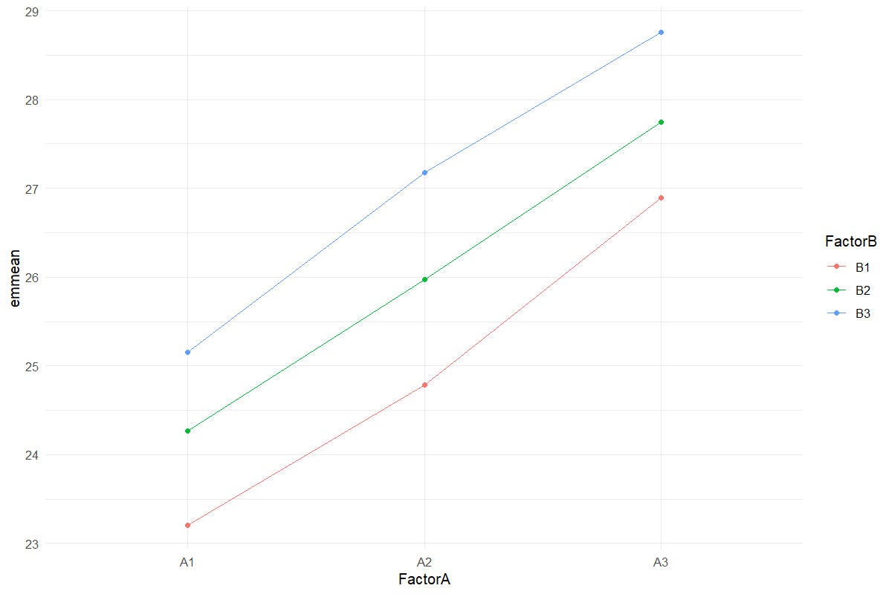

Worked analysis · 1 executable examples
Strip-Plot Analysis
Use three appropriate error strata
Question and data
Supply a complete Rep × FactorA × FactorB layout. Both treatment factors are randomized in strips, making this different from a split-plot design.
Read and report the results
Report factor A against Rep:A, factor B against Rep:B, and the interaction against the residual interaction error. The estimated-means model includes these strata. Tukey corrections apply within each displayed comparison family.
Run the examples
From the repository root, restore the locked dependencies and load the app functions. These are source-checkout examples, not an installed package API.
source("tools/example-cases.R")
load_drdesign()In Shiny, select this module from its workflow heading, upload the example CSV, map the columns, review observations and run. Each R example states the analysis options to reproduce.
strip-plot
Synthetic teaching data; not evidence from a field experiment.
Input
| Rep | Factor A | Factor B | Value |
|---|---|---|---|
| R1 | A1 | B1 | 23.427 |
| R2 | A1 | B1 | 22.227 |
| R3 | A1 | B1 | 23.970 |
| R1 | A2 | B1 | 24.019 |
| R2 | A2 | B1 | 25.804 |
| R3 | A2 | B1 | 24.528 |
| R1 | A3 | B1 | 27.050 |
| R2 | A3 | B1 | 27.381 |
Showing up to 8 of 27 observations. The CSV contains every row.
Analysis
data <- research_example("strip-plot")
result <- run_strip_trial(data)Computed output
ANOVA 7 rows
| Source / term | df | SS | MS | F | p-value |
|---|---|---|---|---|---|
| d$Rep | 2 | 0.062 | 0.031 | NA | NA |
| d$FactorA | 2 | 58.114 | 29.057 | 12.916 | 0.018 |
| Ea | 4 | 8.998 | 2.250 | NA | NA |
| d$FactorB | 2 | 19.241 | 9.621 | 165.578 | <0.001 |
| Eb | 4 | 0.232 | 0.058 | NA | NA |
| d$FactorB:d$FactorA | 4 | 0.277 | 0.069 | 0.144 | 0.961 |
| Ec | 8 | 3.849 | 0.481 | NA | NA |
Interaction means 9 rows
| Factor A | Factor B | Estimated mean | SE | df | CI lower | CI upper |
|---|---|---|---|---|---|---|
| A1 | B1 | 23.208 | 0.493 | 7.811 | 22.066 | 24.351 |
| A2 | B1 | 24.783 | 0.493 | 7.811 | 23.641 | 25.926 |
| A3 | B1 | 26.897 | 0.493 | 7.811 | 25.755 | 28.040 |
| A1 | B2 | 24.267 | 0.493 | 7.811 | 23.124 | 25.409 |
| A2 | B2 | 25.973 | 0.493 | 7.811 | 24.830 | 27.115 |
| A3 | B2 | 27.747 | 0.493 | 7.811 | 26.604 | 28.889 |
| A1 | B3 | 25.151 | 0.493 | 7.811 | 24.008 | 26.293 |
| A2 | B3 | 27.180 | 0.493 | 7.811 | 26.038 | 28.322 |
| A3 | B3 | 28.762 | 0.493 | 7.811 | 27.619 | 29.904 |
Warning: EMMs are biased unless design is perfectly balanced
Confidence level used: 0.95
Factor A comparisons 3 rows
| contrast | estimate | SE | df | t | p-value |
|---|---|---|---|---|---|
| A1 - A2 | -1.770 | 0.707 | 4 | -2.504 | 0.136 |
| A1 - A3 | -3.594 | 0.707 | 4 | -5.082 | 0.015 |
| A2 - A3 | -1.823 | 0.707 | 4 | -2.579 | 0.126 |
Results are averaged over the levels of: FactorB
P value adjustment: tukey method for comparing a family of 3 estimates
Factor B comparisons 3 rows
| contrast | estimate | SE | df | t | p-value |
|---|---|---|---|---|---|
| B1 - B2 | -1.032 | 0.114 | 4 | -9.085 | 0.002 |
| B1 - B3 | -2.068 | 0.114 | 4 | -18.198 | <0.001 |
| B2 - B3 | -1.035 | 0.114 | 4 | -9.112 | 0.002 |
Results are averaged over the levels of: FactorA
P value adjustment: tukey method for comparing a family of 3 estimates
A within B comparisons 9 rows
| contrast | Factor B | estimate | SE | df | t | p-value |
|---|---|---|---|---|---|---|
| A1 - A2 | B1 | -1.575 | 0.845 | 7.470 | -1.865 | 0.214 |
| A1 - A3 | B1 | -3.689 | 0.845 | 7.470 | -4.367 | 0.007 |
| A2 - A3 | B1 | -2.114 | 0.845 | 7.470 | -2.502 | 0.088 |
| A1 - A2 | B2 | -1.706 | 0.845 | 7.470 | -2.020 | 0.174 |
| A1 - A3 | B2 | -3.480 | 0.845 | 7.470 | -4.119 | 0.010 |
| A2 - A3 | B2 | -1.774 | 0.845 | 7.470 | -2.100 | 0.155 |
| A1 - A2 | B3 | -2.029 | 0.845 | 7.470 | -2.402 | 0.101 |
| A1 - A3 | B3 | -3.611 | 0.845 | 7.470 | -4.275 | 0.008 |
| A2 - A3 | B3 | -1.582 | 0.845 | 7.470 | -1.872 | 0.212 |
P value adjustment: tukey method for comparing a family of 3 estimates
B within A comparisons 9 rows
| contrast | Factor A | estimate | SE | df | t | p-value |
|---|---|---|---|---|---|---|
| B1 - B2 | A1 | -1.058 | 0.476 | 8.930 | -2.223 | 0.121 |
| B1 - B3 | A1 | -1.942 | 0.476 | 8.930 | -4.079 | 0.007 |
| B2 - B3 | A1 | -0.884 | 0.476 | 8.930 | -1.856 | 0.207 |
| B1 - B2 | A2 | -1.189 | 0.476 | 8.930 | -2.498 | 0.079 |
| B1 - B3 | A2 | -2.397 | 0.476 | 8.930 | -5.033 | 0.002 |
| B2 - B3 | A2 | -1.207 | 0.476 | 8.930 | -2.535 | 0.075 |
| B1 - B2 | A3 | -0.849 | 0.476 | 8.930 | -1.784 | 0.229 |
| B1 - B3 | A3 | -1.864 | 0.476 | 8.930 | -3.916 | 0.009 |
| B2 - B3 | A3 | -1.015 | 0.476 | 8.930 | -2.132 | 0.138 |
P value adjustment: tukey method for comparing a family of 3 estimates
Reviewed data 27 rows
| Rep | Factor A | Factor B | Value |
|---|---|---|---|
| R1 | A1 | B1 | 23.427 |
| R2 | A1 | B1 | 22.227 |
| R3 | A1 | B1 | 23.970 |
| R1 | A2 | B1 | 24.019 |
| R2 | A2 | B1 | 25.804 |
| R3 | A2 | B1 | 24.528 |
| R1 | A3 | B1 | 27.050 |
| R2 | A3 | B1 | 27.381 |
| R3 | A3 | B1 | 26.260 |
| R1 | A1 | B2 | 24.956 |
| R2 | A1 | B2 | 23.011 |
| R3 | A1 | B2 | 24.833 |
| R1 | A2 | B2 | 25.484 |
| R2 | A2 | B2 | 26.101 |
| R3 | A2 | B2 | 26.334 |
| R1 | A3 | B2 | 27.295 |
| R2 | A3 | B2 | 28.940 |
| R3 | A3 | B2 | 27.004 |
| R1 | A1 | B3 | 25.860 |
| R2 | A1 | B3 | 24.441 |
| R3 | A1 | B3 | 25.151 |
| R1 | A2 | B3 | 27.286 |
| R2 | A2 | B3 | 26.332 |
| R3 | A2 | B3 | 27.922 |
| R1 | A3 | B3 | 28.001 |
| R2 | A3 | B3 | 29.884 |
| R3 | A3 | B3 | 28.400 |
Software versions 8 rows
| Source / term | Package | Version |
|---|---|---|
| R | 4.5.3 | |
| shiny | shiny | 1.13.0 |
| agricolae | agricolae | 1.3.7 |
| metan | metan | 1.19.0 |
| lme4 | lme4 | 2.0.1 |
| emmeans | emmeans | 2.0.2 |
| SpATS | SpATS | 1.0.20 |
| DiallelAnalysisR | DiallelAnalysisR | 0.6.0 |
Analysis settings 3 rows
| Setting | Value |
|---|---|
| Alpha | 0.05 |
| Errors | Rep:A, Rep:B, residual interaction |
| Comparisons | Tukey within each displayed family |

Reporting conventions
Tables: estimates and standard errors to 3 decimals; p-values below 0.001 shown as <0.001. Very small or large values use scientific notation. NA means unavailable or not applicable. CSV files retain numerical precision. Confidence levels and multiplicity corrections follow the stated analysis settings; shared letters indicate non-rejection, not equivalence.